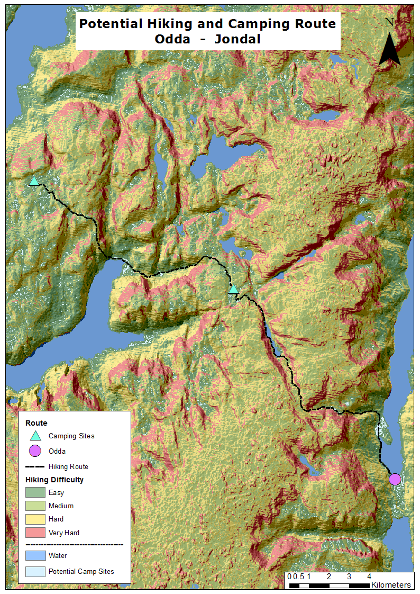

Lightrail costs and suitability

Metadata
Course name
GIS-tools
Application of the products
Find the best route for a lightrail in a given area.
Potential users
Municipalities
Consultancy companies
Potential users' requirements
It must be easy to interpret and it must show the costs clearly.
Visualisation type
The analogical map is the classic way of presenting results, and therefore, it is easier to understand by any users, and it is the technology municipalities are used to work with.
Dataset(s)
DEM
Cadaster data
Processing method(s)
Suitability analysis
Cost Path
Tools used
ArcGIS
ArcGIS models
Reflection on result
The potential route for the lightrail is clear. Results could be improved if the background map would be less transparent. Choice of colours allow to distinguish the different suitabilities in a logical way (red = less suitable, green = more suitable). The path is created to follow the cheapest rute, and it shows the cost/m2 with its thickness (the thicker the line the more expensive is it ti build).
Hiking and Camping Route

Metadata
Course name
Advanced Geo-information Science for Earth and Environment
Course code
GRS-33306
Application of the products
Provide multiple-day hikking routes
Potential users
Tourism-related companies
Hikkers
Potential users' requirements
Easy to interpret
Visualisation type
While hikking, internet access is not an always an option, therefore, an analogic map fits the purpose best. Furthermore, the analogical map is the classic way of presenting results, and therefore, it is easier to understand by any users, including those that are not so familiar with new technologies
Dataset(s)
- DEM
Processing method(s)
DEM derivatives
Suitability analysis
Cost Path
Tools used
ASTER GDEM
ArcGIS
Reflection on result
The potential route for hikking is clear. Results could be improved if locations suitable for camping would be bigger (perhaps with a buffer), so they would be more visible. Choice of colours allow to distinguish the different classes in a logical way (red = difficult, green = easy). The path is created to follow the easier route, which wouldn't be prefered by experienced hikkers. Alternative routes based on difficulty could be added.